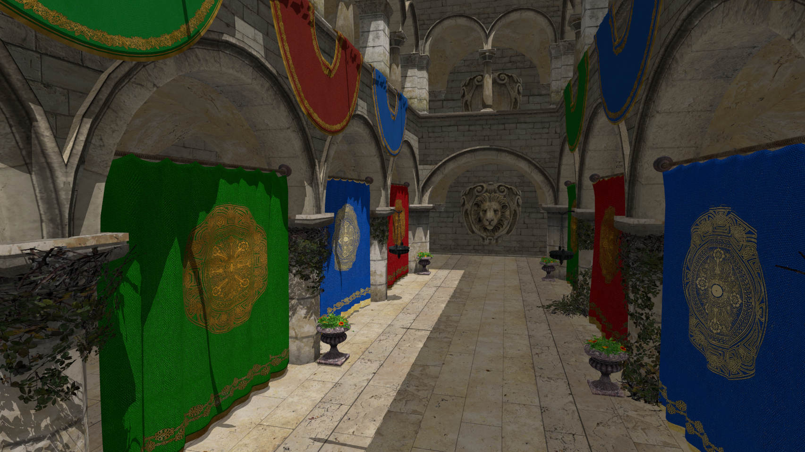
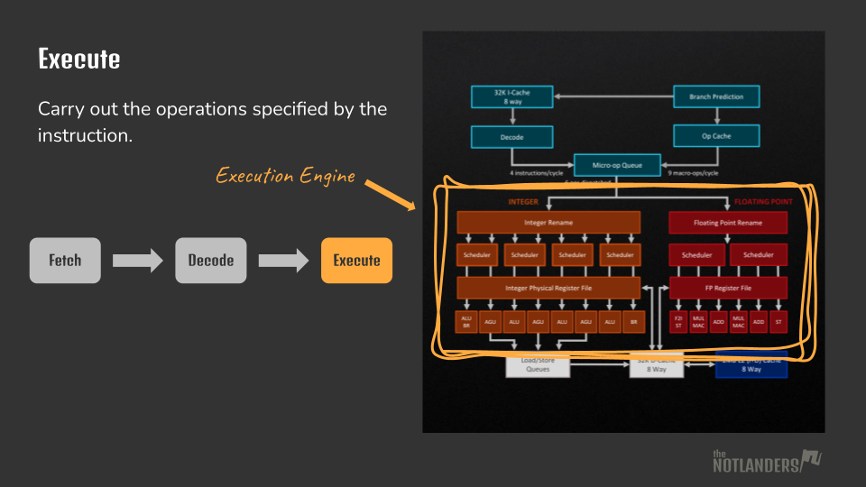
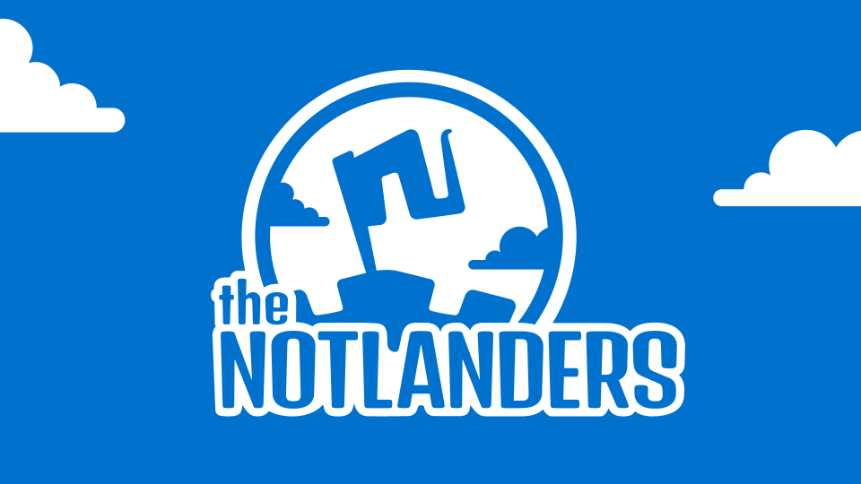

Stranded in the space between game design and programming, I've carved out my niche as a technical designer and gameplay programmer.
I prefer to be an active force multiplier, supporting teammates so they can focus on their creative work while still contributing creatively and technically myself. Bring me on board to help design and prototype gameplay experiences, implement features, fix bugs, provide technical support, write documentation, build tools and optimize workflows.
I'm also one half of The Notlanders, an indie studio I co-founded in 2024.
Portfolio

Ray Tracer (Vulkan)
Real-time ray tracer built with Vulkan ray tracing extensions that I wrote as a graduation project at Futuregames. The project started out as a general purpose game engine with a forward renderer.
Features include: free camera, mirror reflections, skyboxes, lighting, alpha cutouts, loading .obj models and .mtl materials.
GitHub
Computer Architecture Lectures
In May 2025 I delivered a lecture on SIMD to fellow students at Futuregames. I challenged myself to pick up a difficult topic I knew almost nothing about, research the subject and teach it. Most of the lecture is actually about the basics of CPU architecture, because it's a prerequisite!
I'm currently working on more lectures.
Slides
The Notlanders
A tiny indie studio I co-founded together with Martin Zetterman in 2024. I act as the principal programmer on the team.
We're currently developing out first commercial game.
WebsiteIndomitable
Indomitable is a boss-rush game where you play as a skilled fighter captured and forced into gladiatorial combat.
I developed the boss enemy AI, using context-based steering for navigation and behavior trees for decision-making.
Play on itch.ioDaidala
Daidala is a tower defense game in which you are tasked with protecting the Minotaur at the center of the labyrinth.
As lead programmer, I implemented most of the core gameplay systems, including trap placement, dialogue system, and much more.
Play on itch.io